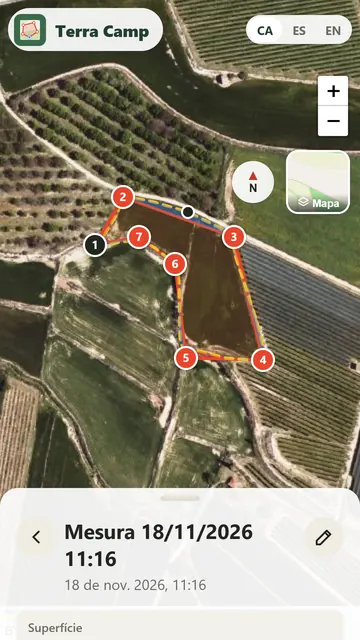
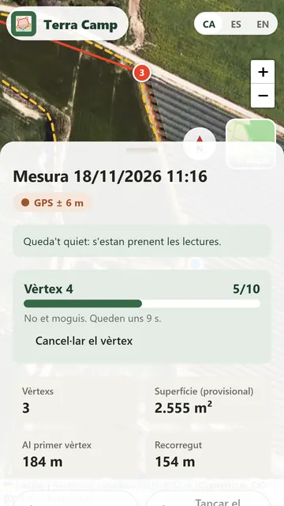
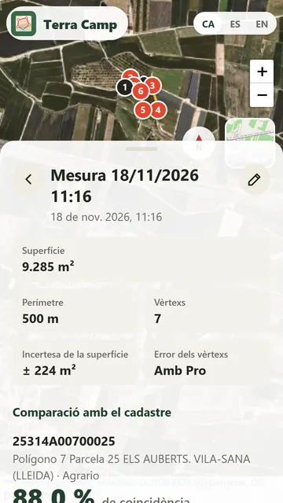
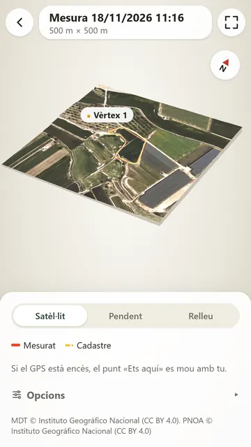

Terra Camp: mesura parcel·les
Terra Camp mesura una parcel·la sobre el terreny amb el GPS del mòbil i la compara amb la del Cadastre: saps de seguida si les lindes que veus al camp són les que diu el mapa.
Per a pagesos, propietaris, tècnics i qualsevol que vulgui saber què mesura de veritat el seu tros.
Funciona al navegador del mòbil o de l'ordinador, sense instal·lar res. Aviat, també a Google Play.




Què pots fer
-
Camina i mesura
- Ves a cada cantonada i toca «Prendre el vèrtex»: l'app pren diverses lectures del GPS i en fa la mitjana, descartant les pitjors
- A Android, continua mesurant amb la pantalla apagada, amb una notificació mentre dura
- L'app et proposa tancar el polígon quan tornes al primer vèrtex
- Si l'app es tanca, la mesura continua on l'havies deixada
-
Compara amb el Cadastre
- La parcel·la del lloc on ets, per referència cadastral, per polígon i parcel·la o tocant-la al mapa
- Coincidència, superfície mesurada i del Cadastre, i la diferència en m² i en %
- Les zones que només són a l'una o a l'altra, pintades al mapa
- A quants metres és cada vèrtex de la linda
- La vista 3D del relleu amb la parcel·la i el polígon mesurat
-
Amb la versió Pro
- Mesures desades sense límit
- Promig configurable: lectures, segons entre elles i quantes se'n descarten
- L'error estimat de cada vèrtex i tornar a mesurar-ne un
- Exportar a GeoJSON, KML, GPX i CSV
- Informe PDF amb la comparació, el dibuix a escala i la taula de vèrtexs
-
Privada
- Sense comptes, sense anuncis i sense estadístiques
- Les mesures es desen només al dispositiu
Gratuïta, amb un Pro de pagament únic
Mesurar, comparar amb el Cadastre i la vista 3D són gratuïts, amb una mesura desada. La versió Pro és una compra única, sense subscripció.
Preu del Pro: 4,49 € (IVA inclòs), pagament únic.
La precisió depèn del GPS del mòbil i de l'entorn: la mesura és orientativa i no serveix per a tràmits oficials de lindes, que demanen un tècnic topògraf.
Fonts de les dades
- Cadastre: Direcció General del Cadastre
- Model del terreny i ortofotos del PNOA: Institut Geogràfic Nacional (IGN)
Terra Camp és una app independent de L'Abelluco: no representa cap administració pública ni hi està vinculada.